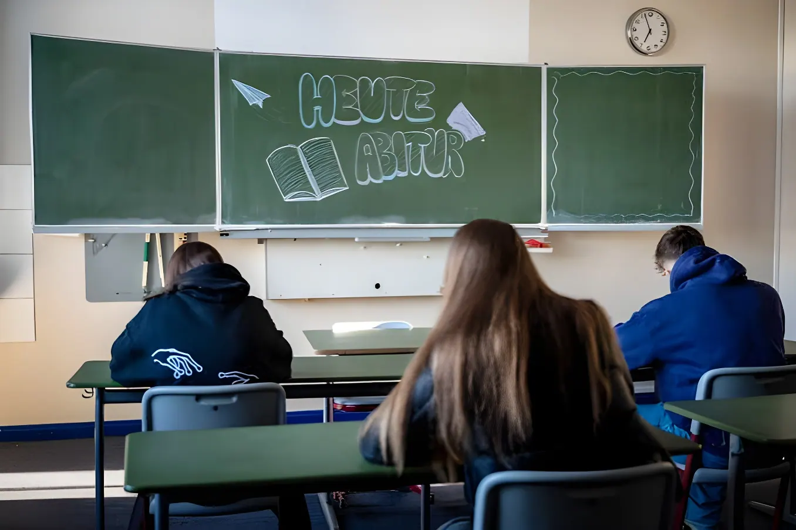

L'OCDE a publié le 8 septembre 2026 les résultats de l'enquête PISA 2025, la plus vaste jamais menée avec près de 760 000 élèves testés dans 91 pays et économies. Pour l'Allemagne, le constat est sévère : les jeunes de 15 ans obtiennent leurs plus mauvais résultats depuis la création de l'enquête en 2000, aussi bien en sciences qu'en lecture et en mathématiques, tandis que les écarts liés à l'origine sociale continuent de se creuser.
Pilotée par l'OCDE, l'enquête PISA (Programme international pour le suivi des acquis des élèves) évalue tous les trois ans les compétences des élèves de 15 ans en lecture, en mathématiques et en sciences. L'édition 2025, publiée le 8 septembre 2026, a mobilisé environ 760 000 élèves dans 91 pays et économies, dont 38 membres de l'OCDE ; il s'agit de la plus vaste édition jamais réalisée. Le domaine approfondi cette année était les sciences.
En Allemagne, environ 6 700 élèves ont été testés dans quelque 250 établissements. L'enquête, coordonnée pour la partie allemande par le Centre pour les études comparatives internationales en éducation (ZIB) de l'université technique de Munich sous la direction du professeur Samuel Greiff, pour le compte de la Conférence des ministres de l'Éducation (KMK) et du ministère fédéral, aboutit à un constat sans appel : avec 486 points en sciences, 465 en lecture et 464 en mathématiques, l'Allemagne enregistre dans les trois domaines ses scores les plus bas depuis le début des évaluations PISA, en deçà même du niveau mesuré lors de la toute première édition, en 2000.
Karin Prien relie une partie des difficultés observées en concentration, en endurance et en compréhension de lecture au temps passé devant les écrans et à l'usage des réseaux sociaux ; elle plaide pour une limite d'âge d'accès aux réseaux sociaux, une meilleure éducation aux médias et une vérification d'âge efficace au niveau européen, avec des propositions attendues en conseil des ministres dans les prochaines semaines. De son côté, le professeur Greiff souligne que le lien entre origine sociale et réussite scolaire est environ trois fois plus fort en Allemagne qu'au Canada, et appelle à investir davantage dans l'éducation de la petite enfance ainsi que dans un enseignement mieux piloté par les données.
Première édition de l'enquête PISA, année de référence à laquelle sont désormais comparés les résultats allemands de 2025.
Point haut relatif des résultats allemands : 514 points en mathématiques et 524 points en sciences.
Premier recul net : 500 points en mathématiques et 503 en sciences, sous l'effet d'une baisse déjà amorcée depuis 2012.
Nouvelle chute, déjà qualifiée d'alarmante à l'époque : 475 points en mathématiques, 492 en sciences et 480 en lecture.
Publication de PISA 2025 : 464 points en mathématiques, 486 en sciences et 465 en lecture, les niveaux les plus bas jamais enregistrés pour l'Allemagne.
En valeur absolue, l'Allemagne se classe 23e en sciences, 24e en lecture et 25e en mathématiques (à égalité avec la Suède) parmi les pays et économies participants. Quatorze pays de l'OCDE obtiennent des résultats nettement supérieurs, parmi lesquels l'Estonie, le Canada, la Suisse et l'Autriche. Fait notable relevé par les chercheurs allemands : pour la première fois depuis 2006, le score allemand en sciences n'est plus significativement supérieur à la moyenne de l'OCDE.
L'écart entre élèves favorisés et défavorisés reste par ailleurs particulièrement marqué en Allemagne : en sciences, le quart le plus favorisé socio-économiquement obtient en moyenne 125 points de plus que le quart le plus défavorisé, contre un écart moyen de 85 points dans l'OCDE. Cet écart s'est encore creusé entre 2015 et 2025 en Allemagne, alors qu'il s'est réduit en moyenne dans l'OCDE : les performances des jeunes défavorisés ont reculé, tandis que celles des plus favorisés sont restées stables.
| Acteur | Réaction |
|---|---|
| Karin Prien (CDU) | Ministre fédérale de l'Éducation ; qualifie les résultats de « préoccupants » et pointe l'aggravation des inégalités sociales |
| Anna Stolz (CSU) | Ministre de l'Éducation de Bavière, présidente de la Conférence des ministres de l'Éducation (BMK) ; juge les résultats « inacceptables » mais pas surprenants |
| Samuel Greiff (TUM) | Responsable scientifique de l'étude en Allemagne ; évoque des « niveaux de compétences historiquement bas » |
| Organisations patronales | Alertent sur un coût économique futur estimé en milliers de milliards d'euros et réclament des réponses politiques |
« Ce que nous observons aujourd'hui est, sans aucun doute, un constat préoccupant. »
— Karin Prien, ministre fédérale de l'Éducation, 8 septembre 2026PISA 2025 confirme une tendance déjà amorcée en 2018 et 2022 : depuis dix ans, l'Allemagne perd du terrain dans les trois compétences évaluées, sans que les réformes engagées n'aient encore inversé la courbe. Le gouvernement fédéral et les Länder disposent désormais de trois ans, jusqu'à la prochaine édition de l'enquête, pour transformer les mesures annoncées — sur les compétences de base, l'accueil de la petite enfance ou l'encadrement des écrans — en résultats mesurables, sous peine de voir se confirmer un décrochage structurel de l'école allemande.
Die OECD hat am 8. September 2026 die Ergebnisse der PISA-Studie 2025 veröffentlicht, der bislang größten ihrer Art mit rund 760.000 getesteten Jugendlichen in 91 Staaten und Regionen. Für Deutschland fällt der Befund deutlich aus: Die 15-Jährigen erzielen sowohl in Naturwissenschaften als auch im Lesen und in Mathematik die schlechtesten Ergebnisse seit Beginn der Erhebung im Jahr 2000, während sich die sozial bedingten Leistungsunterschiede weiter vergrößern.
Die von der OECD koordinierte PISA-Studie (Programme for International Student Assessment) untersucht alle drei Jahre die Kompetenzen 15-Jähriger in Lesen, Mathematik und Naturwissenschaften. Die am 8. September 2026 veröffentlichte Ausgabe 2025 erfasste rund 760.000 Jugendliche in 91 Staaten und Regionen, darunter 38 OECD-Mitgliedstaaten — die bislang umfangreichste PISA-Erhebung. Im Zentrum stand diesmal der Bereich Naturwissenschaften.
In Deutschland wurden rund 6.700 Jugendliche an etwa 250 Schulen getestet. Der deutsche Teil der Studie wurde vom Zentrum für internationale Bildungsvergleichsstudien (ZIB) an der Technischen Universität München unter Leitung von Prof. Samuel Greiff im Auftrag der Kultusministerkonferenz (KMK) und des Bundesministeriums durchgeführt. Das Ergebnis ist eindeutig: Mit 486 Punkten in Naturwissenschaften, 465 im Lesen und 464 in Mathematik erzielt Deutschland in allen drei Bereichen die niedrigsten Werte seit Beginn der PISA-Erhebungen — sogar unter dem Niveau der allerersten Erhebung im Jahr 2000.
Karin Prien führt einen Teil der beobachteten Defizite bei Konzentration, Ausdauer und sinnentnehmendem Lesen auf Bildschirmzeiten und die Nutzung sozialer Medien zurück; sie plädiert für eine Altersbeschränkung für Social Media, bessere Medienerziehung und eine wirksame europäische Altersverifikation, mit entsprechenden Kabinettsvorschlägen in den kommenden Wochen. Studienleiter Samuel Greiff weist darauf hin, dass der Zusammenhang zwischen sozioökonomischem Status und Bildungserfolg in Deutschland etwa dreimal so stark ausgeprägt sei wie in Kanada, und fordert mehr Investitionen in frühkindliche Bildung sowie eine stärker datenbasierte Unterrichtsentwicklung.
Erste PISA-Erhebung, das Bezugsjahr, mit dem die deutschen Ergebnisse von 2025 nun verglichen werden.
Relativer Höchststand der deutschen Ergebnisse: 514 Punkte in Mathematik und 524 Punkte in Naturwissenschaften.
Erster deutlicher Rückgang: 500 Punkte in Mathematik und 503 in Naturwissenschaften, im Zuge eines bereits seit 2012 einsetzenden Abwärtstrends.
Erneuter Einbruch, damals bereits als alarmierend eingestuft: 475 Punkte in Mathematik, 492 in Naturwissenschaften und 480 im Lesen.
Veröffentlichung von PISA 2025: 464 Punkte in Mathematik, 486 in Naturwissenschaften und 465 im Lesen — die niedrigsten je für Deutschland gemessenen Werte.
In absoluten Punktwerten liegt Deutschland in den Naturwissenschaften auf Rang 23, im Lesen auf Rang 24 und in Mathematik gemeinsam mit Schweden auf Rang 25 unter den teilnehmenden Staaten und Regionen. In 14 OECD-Staaten fielen die Ergebnisse deutlich besser aus, darunter Estland, Kanada, die Schweiz und Österreich. Bemerkenswert: Erstmals seit 2006 liegt der deutsche Naturwissenschafts-Wert nicht mehr signifikant über dem OECD-Durchschnitt.
Der Abstand zwischen sozial begünstigten und benachteiligten Jugendlichen bleibt in Deutschland besonders groß: In den Naturwissenschaften erzielt das sozioökonomisch begünstigte oberste Viertel im Schnitt 125 Punkte mehr als das unterste Viertel — im OECD-Durchschnitt beträgt dieser Abstand 85 Punkte. Zwischen 2015 und 2025 hat sich diese Lücke in Deutschland weiter vergrößert, während sie im OECD-Mittel kleiner wurde: Die Leistungen benachteiligter Jugendlicher gingen zurück, die der begünstigten blieben stabil.
| Akteur | Reaktion |
|---|---|
| Karin Prien (CDU) | Bundesbildungsministerin; bezeichnet die Ergebnisse als „besorgniserregend" und verweist auf die wachsende soziale Schere |
| Anna Stolz (CSU) | Bayerische Kultusministerin, Präsidentin der Bildungsministerkonferenz (BMK); nennt die Ergebnisse „inakzeptabel", aber nicht überraschend |
| Samuel Greiff (TUM) | Wissenschaftlicher Leiter der Studie in Deutschland; spricht von „historisch niedrigen Kompetenzständen" |
| Arbeitgeberverbände | Warnen vor künftigen Folgekosten in Billionenhöhe und fordern politische Konsequenzen |
„Was wir heute sehen, ist ohne jeden Zweifel ein besorgniserregender Befund."
— Karin Prien, Bundesbildungsministerin, 8. September 2026PISA 2025 bestätigt einen Trend, der sich bereits 2018 und 2022 abzeichnete: Seit zehn Jahren verliert Deutschland in allen drei getesteten Kompetenzbereichen an Boden, ohne dass die bisherigen Reformen die Entwicklung umgekehrt hätten. Bund und Länder haben nun bis zur nächsten Erhebung in drei Jahren Zeit, die angekündigten Maßnahmen — bei den Basiskompetenzen, in der frühkindlichen Bildung oder beim Umgang mit Bildschirmzeit — in messbare Ergebnisse zu übersetzen. Andernfalls droht sich ein strukturelles Zurückfallen der deutschen Schule zu bestätigen.